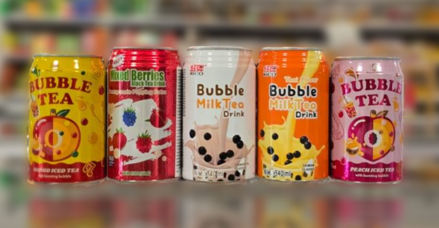
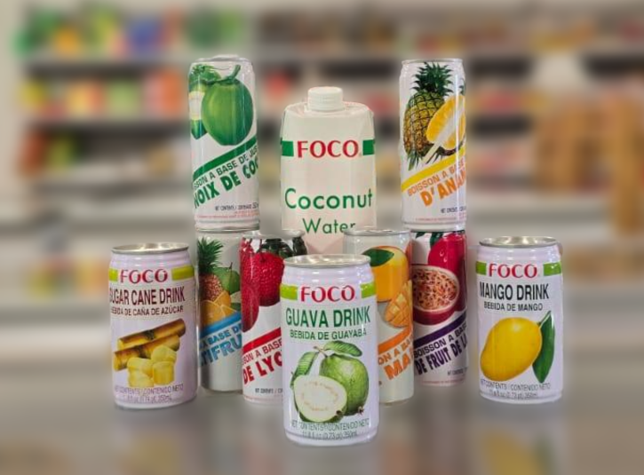
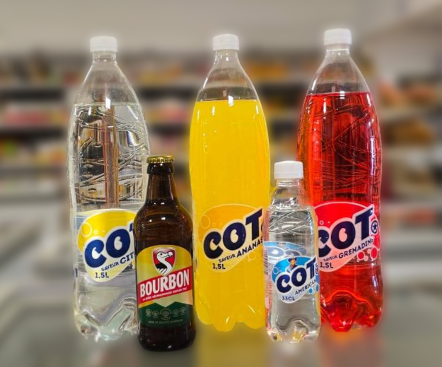
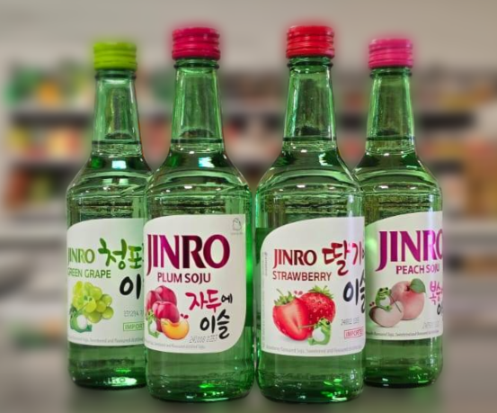
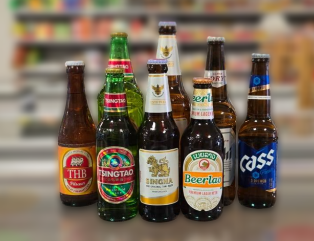
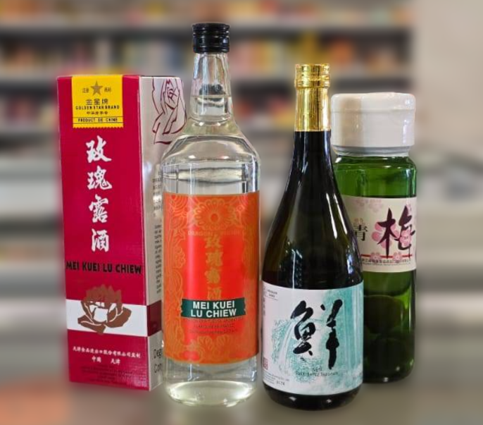
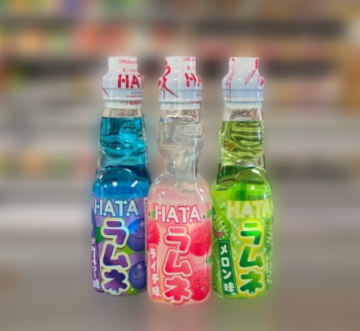
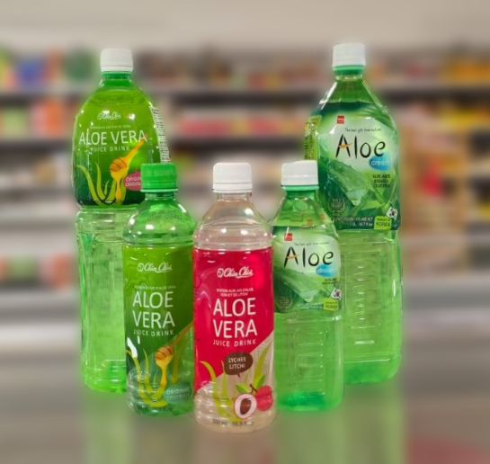

Rayon Boissons
Les produits du rayon boissons les plus achetés
Royal Soda – Le soda thaïlandais pétillant et sucré, parfait pour se rafraîchir avec ses saveurs uniques de fruits tropicaux.
Bubble Tea – L'incontournable boisson taiwanaise aux perles de tapioca. Un mariage onctueux entre thé, lait et douceur chewy.
Foco – Des jus exotiques 100 % nature comme la noix de coco, le litchi ou l'ananas. Une gorgée, et c’est le dépaysement garanti.
Cot – Les sodas vietnamiens aux parfums rétro et surprenants.
Soju – L’alcool coréen iconique : doux, fruité ou traditionnel, idéal pour les soirées entre amis ou accompagner un repas coréen.
Bières – Un tour d’Asie en bouteilles : Beerlao, Tsingtao, Singha… Des bières légères et désaltérantes à découvrir.
Digestifs japonais – Des saveurs subtiles comme l’umeshu (liqueur de prune) ou le saké doux, parfaits pour finir un repas en finesse.
Hata – Le célèbre ramune japonais au bouchon en bille. Une expérience ludique et rafraîchissante aux arômes fruités intenses.
Aloe Vera – Une boisson douce et apaisante, avec de véritables morceaux d’aloe vera, parfaite pour hydrater et se faire plaisir naturellement.